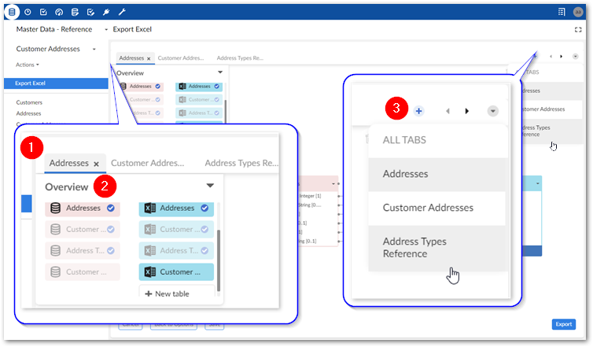

When moving data with the add-on, you use the Mapping screen to perform all mapping related tasks, including those related to transforming data. The following sections describe the user interfaces for mapping and transformations:
The image below and following list describe elements in the Mapping screen:
1) Overview box | This box shows you which tables are available to add to the mapping pane and which are currently in the mapping pane. To add an available table, select and drag it to the mapping pane. |
2) Transformation functions palate | This palate contains all available transformation functions. To add a function to the mapping pane, select and drag it over. |
3) Mapping pane | The mapping pane shows all tables included in this operation. To create a mapping, select and drag one connection point to another. For a mapping to be successful, it can only be mapped to the same type of component. For example, table to table and field to field. |
4) Button bar | These icons allow you to:
|
5) Back to Options, Save as, Save/Update | These buttons allow you to: return to the Options screen and save your mapping configuration as a template for later use. If you make changes to an existing template, select Update to save the changes. |
The image below and following list describe some of the Mapping screen features specific to data integration with multiple tables:

1 & 3) Table mapping tabs and navigation | Each tab contains a table mapping. If many tabs make it difficult to locate the one you want, you can use the icons to the right to page through the tabs. You can use the downwards-facing arrow to open the list of all tabs and select the one you want to view. Use the '+' icon to add a blank tab. You can then drag unmapped source and target tables to the Mapping pane to create mappings. Note that if all sources are mapped, this option is disabled. |
2) Overview box | The paired tables on the selected mapping tab display normally and the others are slightly obfuscated. Tables that are not obfuscated can be added to a mapping. Blue check marks indicate that a table is included in a mapping. Select New table to create a new target table. After you drag it to the mapping pane, you can add fields, mappings, transformations, etc. This option is only available when exporting. |
As implied by its name, transformation functions transform data. Their input accepts data from a source, they operate on this data, and they output the changed data to a target location. One exception to this behavior is the constant value function which only has an output. As UI components, they have connection points that allow you to map incoming data from the source to the left-hand side and outgoing data to the target from the right-hand side.
The image below and following descriptions highlights transformation function options and components:
1) Input connection points | Each connection point accepts a mapping from one field in the source. The '-' icon allows you to remove an incoming or outgoing connection when there are more than the default number of connections. NoteTransformation function inputs are always located on the left-hand side. |
2) Output connection points | Each connection point can be mapped to one field in the target. Note in the image shown above there is only one point. However, some transformation functions can have more than one output. NoteTransformation function outputs are always located on the right-hand side. |
3) Add connection point | The '+' icon allows you to add additional connection points. Selecting this icon will add points automatically to the allowable side (input/output). |
Available actions: | In addition to the functionality related to adding and removing connection points, you can double-click to edit the transformation function's configuration. The options vary depending on the function. But generally you can assign names and descriptions to the inputs and outputs. Additionally, you can edit parameters that determine certain aspects of the transformation function's behavior. See Transformation function reference for more information. |
The following provides an example of adding a transformation function during the import process to split a string in the source into multiple target fields:
Action | Description |
|---|---|
Drag the function from the Transformation functions palate to the mapping pane. | |
Connect the source to the input and the output to the target. | Drag from connection point to connection point. The order you map the connection points can matter. Transformation functions that split values order the output values from top (first) to bottom (last). So in this example the source Contact Name field contains names in the following order: 'John Smith'. When the system splits this string, the first value will be 'John'. So the topmost connection point is mapped to the First name field in the target. The same order of operations applies to concatenation. |
Edit the transformation function. | Double-click to edit the function. Note that the input/output names and descriptions are optional. Although, it does not display on the screen the important property to note here is the Parameter. A space has been entered in the Value field. |